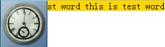
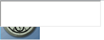
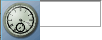
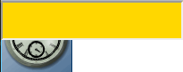

RX8012: 不同浏览器中 Flash 与其他元素发生覆盖时有差异
标准参考
堆栈级 stack level 概念请参见 CSS 2.1 规范：9.9 Layered presentation。
'z-index' 特性对 stack level 的影响，请参见 CSS 2.1 规范：9.9.1 Specifying the stack level: the 'z-index' property。
问题描述
不同浏览器中 Flash 与其他元素发生覆盖时， Flash 与其他元素的层叠顺序有差异。
造成的影响
Flash 被其他元素遮挡，或其他元素被 Flash 遮挡，与期待效果不同。
受影响的浏览器
| 所有浏览器 |
|---|
问题分析
一般情况下，页面中会用 OBJECT 与 EMBED 元素来显示一个 FLASH 动画。大致代码如下：
<object type="application/x-shockwave-flash" data="clock.swf">
<param value="clock.swf" name="movie"/>
<param value="wmode" name="window"/>
</object>
OBJECT 元素内 PARAM 元素负责为 Flash 动画设置相应参数，其中 wmode 参数较为重要，它决定了 Flash 的渲染方式。
Adobe 公司的 Flash 开发者文档中有关于 wmode 参数值的详细说明： Support for WMODE
当 wmode = "transparent" 或 "opaque" 时，Flash 动画交由页面渲染引擎负责渲染，此时它在定位流中的位置由 CSS 中的 'z-index' 特性控制。
如果 wmode 没有设置，他的默认值是 window，这代表 Flash 动画将在 window 窗口级别渲染，相应元素拥有系统级的窗口句柄，它所在定位流中的 'z-index' 特性将失效，而会处于所有未拥有窗口句柄特性的页面元素之上，此时用来控制定位流中 Z 轴方向中上下层位置的 'z-index' 特性将会失效。
分析如下代码：
<body style="margin:40px;">
<object type="application/x-shockwave-flash" data="clock.swf" style="height:80px; width:80px; position:absolute; top:0; left:0;">
<param value="clock.swf" name="movie"/>
<param value="wmode" name="window"/>
</object>
<iframe src="http://www.google.com/logos/" style="width:240px; height:120px;"></iframe>
</body>
页面中用来播放 Flash 的 OBJECT 元素被设置了绝对定位 position:absolute，使其处于定位流中，'z-index' 特性没有设置，采用默认值 auto。此时它已不在普通流中占有位置。
由于其本身已经处于定位流中，页面中其他元素均处于普通流中，它本身还在窗口级别渲染，其他定位流中元素也无法覆盖它。因此可以断定它会遮挡住其后的 IFRAME 元素显示。
观看实际情况：
| IE6 IE7 IE8 Firefox Safari Opera | Chrome |
|---|---|
 |
 |
在 IE6 IE7 IE8 Firefox Safari Opera 浏览器中显示情况均与相关规范吻合。但是 Chrome 中处于普通流中的 IFRAME 元素却将拥有窗口句柄的定位流中元素覆盖。
造成这个问题的情况只能有一种，即在 Chrome 中 IFRMAE 元素实际上拥有窗口句柄，虽然这个句柄无法使用 SPY++ 等窗口句柄信息查看工具获取到。
根据 window 窗口建立的规律，后建立的窗口会拥有更高的堆栈级别，覆盖于最先建立的窗口上。
我们只需将原始代码中的 IFRAME 元素放置到 OBJECT 元素之前，使它先被创建，观察其是否被后创建的 OBJECT 覆盖，就可以证实这个推测：
<body style="margin:40px;">
<iframe src="http://www.google.com/logos/" style="width:240px; height:120px;"></iframe>
<object type="application/x-shockwave-flash" data="clock.swf" style="height:80px; width:80px; position:absolute; top:0; left:0;">
<param value="clock.swf" name="movie"/>
<param value="wmode" name="window"/>
</object>
</body>
观看实际情况：
| 所有浏览器 |
|---|
|
根据上表可以看出，实际情况与猜测情况相吻合。
绝对定位元素与 Flash ( wmode = "window" )重叠时，当 'background' 的特性值不是 'transparent' 时， Firefox 中绝对定位元素却可以遮挡 Flash ，其它浏览器都不能遮挡 Flash 。
分析以下代码：
<!DOCTYPE HTML>
<html>
<head></head>
<body style="margin:40px;">
<object type="application/x-shockwave-flash"
data="clock.swf"
style="height:80px; width:80px; position:absolute; top:0; left:0;">
<param value="clock.swf" name="movie"/>
<param value="wmode" name="window"/>
</object>
<div style="top:0;position:absolute; left: 0;background: gold;">this is test word this is test word</div>
</body>
</html>
以上代码在不同浏览器中表现如下：
| Firefox | IE6 IE7 IE8 Chrome Safari Opera |
|---|---|
 |
 |
绝对定位元素是 iframe 时与 Flash ( wmode = "window" )重叠， IE 和 Chrome 中 iframe 会遮挡 Flash ，而Firefox Safari Opera 中 Flash 会遮挡iframe
分析以下代码：
<!DOCTYPE HTML>
<html>
<head></head>
<body style="margin:40px;">
<object type="application/x-shockwave-flash"
data="clock.swf"
style="height:80px; width:80px; position:absolute; top:0; left:0;">
<param value="clock.swf" name="movie"/>
<param value="wmode" name="window"/>
</object>
<iframe src="about:blank" class="cover_iframe" width="200" height="50" frameborder="1" scrolling="no" style="position:absolute;top:0;left:0;"></iframe>
</body>
</html>
以上代码在不同浏览器中表现如下：
| IE Chrome | Firefox Safari Opera |
|---|---|
|  |  |
有没有办法让 iframe 元素在所有浏览器下都可以遮挡 Flash呢？
分析以下代码：
<!DOCTYPE HTML>
<html>
<head></head>
<body style="margin:40px;">
<embed type="application/x-shockwave-flash"
src="clock.swf"
style="height:80px; width:80px; position:absolute; top:0; left:0;" wmode="transparent">
</embed>
<iframe src="about:blank" width="200" height="40" frameborder="1" scrolling="no" style="position:absolute;top:0px;left:0px;background: gold;"></iframe>
</body>
</html>
以上代码在不同浏览器中表现如下：
| IE | Firefox Chrome Safari Opera |
|---|---|
 |
 |
解决方案
若有页面需求是要求其他元素遮挡 Flash
- 1.使用 EMBED 引入Flash 。
- 2.wmode的值使用 'transparent' 或 'opaque' 。
- 3.使用的 iframe 需要设置背景色(设置为白色)。
注意：当wmode的值不是window时，Flash中有可能无法切换输入法，该问题为插件问题，期待插件厂商修复。关于 IE 和非IE浏览器背景色不同的问题请参见RC3001: IE6 IE7(Q) IE8(Q) 中 IFRAME 元素 'background-color' 特性默认值不是 transparent
参见
知识库
相关问题
测试环境
| 操作系统版本: | Windows 7 Ultimate build 7600 |
|---|---|
| 浏览器版本: |
IE6 IE7 IE8 Firefox 3.6.8 Chrome 6.0.472.14 dev Safari 5.0.1 Opera 10.60 |
| 测试页面: | window_handle_stack_level.html window_handle_stack_level_fix.html absolute_element_background.html absolute_iframe_flash.html iframe_obscure_flash.html |
| 本文更新时间: | 2010-09-07 |
关键字
Flash OBJECT EMBED IFRAME z-index stack level 遮盖